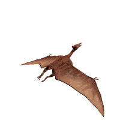

Apariencia
El Pterodactylus es uno de los pterosaurios más antiguos y conocidos, un grupo de reptiles voladores que vivieron durante la era de los dinosaurios. Aunque no es un dinosaurio, el Pterodactylus comparte muchas características fascinantes con los dinosaurios y ha sido fundamental en la comprensión de la evolución del vuelo en vertebrados.
- Longitud y envergadura: El Pterodactylus era relativamente pequeño en comparación con algunos de los pterosaurios más grandes. Su longitud corporal era de aproximadamente 1.5 a 2 metros, y su envergadura alar, es decir, la distancia de una punta de ala a la otra, era de alrededor de 2.5 a 3 metros.
- Cuerpo: Tenía un cuerpo ligero y adaptado para el vuelo, con un esqueleto delgado pero fuerte. Su cuerpo era aerodinámico, facilitando el vuelo activo.
- Cráneo: El cráneo del Pterodactylus era alargado y estrecho, con una forma que recuerda a la de un cocodrilo. Este cráneo alargado estaba equipado con una mandíbula que se extendía hacia adelante.
- Dientes: Tenía dientes cónicos en la mandíbula, adaptados para capturar peces y otros animales pequeños. Estos dientes eran ideales para una dieta que incluía principalmente peces y pequeños invertebrados acuáticos.
- Estructura: Sus alas eran una extensión de la piel estirada entre los huesos de los dedos y el cuerpo. En el Pterodactylus, el cuarto dedo de la mano se había alargado para soportar el ala, creando una estructura de vuelo eficiente.
- Membrana alar: La membrana de las alas estaba compuesta de piel y tejidos que se extendían desde el cuerpo hasta el extremo de los dedos alargados, permitiéndole volar con eficacia.
Tamaño y forma
Cabeza y hocico:
Alas
Rugido
El Pterodactylus, como muchos otros pterosaurios, no tenía una estructura especializada para emitir sonidos fuertes, como el rugido de un dinosaurio carnívoro o el canto de un pájaro moderno. Sin embargo, los estudios de su anatomía y comparaciones con animales modernos nos permiten hacer algunas suposiciones sobre cómo podría haber producido sonidos.
Es más probable que produjera sonidos básicos como gruñidos o resoplidos. Estos sonidos habrían sido adecuados para la comunicación simple y la interacción con otros miembros de su especie, dada la estructura relativamente simple de su aparato vocal.